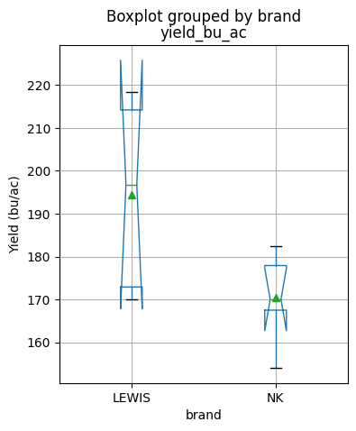
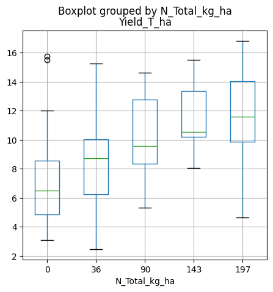
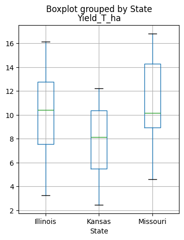
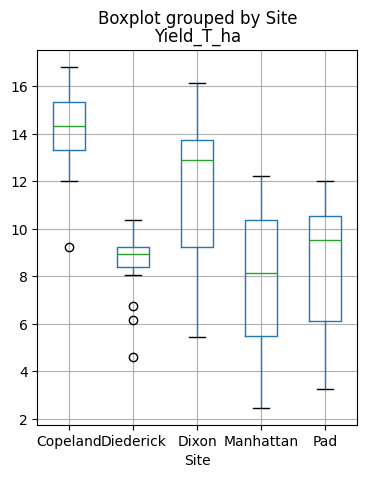
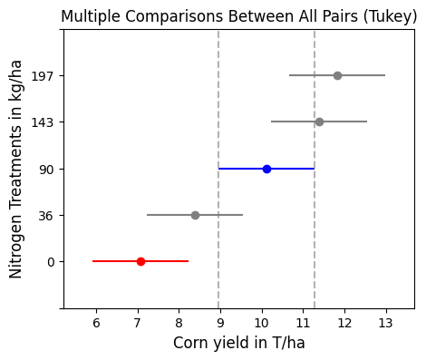

# Import modules
import numpy as np56 Basic statistical tests
Power analysis
A power analysis is an important concept in experimental design and hypothesis testing, as it helps researchers determine the appropriate sample size needed to detect a significant effect, if it exists. Without adequate power, studies may fail to detect genuine effects, leading to inconclusive or misleading results.
In this context, pilot experiments are essential to quantify the approximate variability of a response variable. In the example below our goal is to identify how many downward-facing images we need to collect in a field to compute the percentage of green canopy cover withing a 5% with a 95% confidence. The provided values are the result of an exploratory field data collection to compute the variability of the field. The power analysis rests on the notion that:
n = \Bigg( \frac{1.96 \sigma}{\delta} \Bigg)^2
where n is the number of samples to be collected, \delta is the error marging with 95% confidence, 1.96 is the z-score, and \sigma is the standard deviation (required in advance). For more insights, check the manuscript by Patrignani and Ochsner, 2015.
# Values from a pilot experiment
canopy_cover = np.array([25, 16, 19, 23, 12]) # Percent# Define parameters
z_score = 1.96 # z-score for a 95% confidence level
margin_of_error = 5 # Margin of error
standard_deviation = np.std(canopy_cover)
# Calculate sample size
sample_size = (z_score * standard_deviation / margin_of_error) ** 2
print("Sample size needed:", round(sample_size))Sample size needed: 3One-sample T-test
The scipy.stats module includes function like ttest_1samp that enables researchers to determine whether the mean of a sample significantly differs from a known population mean. For instance, suppose a farmer wants to assess whether a new wheat variety significantly increases the average yield of a specific crop compared to the historical average yield. By collecting yield data from different wheat variety and using ttest_1samp, the farmer can infer whether the observed increase in yield by the fields with the new variety is statistically significant.
Question: Do newer wheat varieties have a statistically significant performance compared to the existing varieties?
# Import modules
import pandas as pd
from scipy import stats# Read dataset
df_new_varieties = pd.read_csv('../datasets/wheat_variety_trial_2023_greeley_county.csv', skiprows=[0])
df_new_varieties.head(3)| brand | name | yield_bu_ac | |
|---|---|---|---|
| 0 | LIMAGRAIN | LCH19DH-152-6 | 50.7 |
| 1 | POLANSKY | ROCKSTAR | 45.2 |
| 2 | KWA | KS WESTERN STAR | 44.5 |
# Define historical average yield of farm
historical_mean_yield = 8 # bu/ac# Estimate mean of all new varieties
df_new_varieties['yield_bu_ac'].mean().round()34.0Two-sided test
Null hypothesis: the mean yield of the new varieties is the same as the historical field yield (popmean).
Alternative hypothesis: the mean yield of the new varieties is different than the historical field yield (popmean).
# Define historical average yield of farm
# Perform a one-sample t-test for each new variety against the historical data
results_two_sided = stats.ttest_1samp(df_new_varieties['yield_bu_ac'],
historical_mean_yield,
alternative='two-sided')
print(f"t_statistic: {results_two_sided[0]}")
print(f"p_value: {results_two_sided[1]}")t_statistic: 22.10361576051108
p_value: 5.9931027593421575e-21# Define significance level
alpha = 0.05
# Find whether we accept or reject the null hypothesis
if results_two_sided[1] < alpha:
print("""We reject the null hypothesis in favor of the alternative hypothesis that
the mean yield of new varieties is statistically different from the historical yield.""")
else:
print("""We accept the null hypothesis. There is no statistically significant evidence that the combined
mean yield of new varieties differs from the historical yield.""")
We reject the null hypothesis in favor of the alternative hypothesis that
the mean yield of new varieties is statistically different from the historical yield.Two-sided confidence intervals
# Compute 95% confidence intervals
ci = results_two_sided.confidence_interval(confidence_level=0.95)
print(ci)ConfidenceInterval(low=31.6727760618944, high=36.47873908962076)One-sided test (less option)
Null hypothesis: The mean of all new varieties is not less than the historical yield.
Alternative hypothesis: The mean of all new varieties is less than the historical yield.
results_one_sided = stats.ttest_1samp(df_new_varieties['yield_bu_ac'],
popmean=historical_mean_yield,
alternative='less')
print(results_one_sided)TtestResult(statistic=22.10361576051108, pvalue=1.0, df=32)if results_one_sided[1] < alpha:
print("""We reject the null hypothesisin favor of the alternative hypothesis that
the mean of the new varieties is less than the historical yield""")
else:
print("""We accept the null hypothesis that the mean of the new varieties
is not less than the historical yield""")
We accept the null hypothesis that the mean of the new varieties
is not less than the historical yieldOne-sided test (greater)
Null hypothesis: The mean of all new varieties is not greater than the historical yield.
Alternative hypothesis: The mean of all new varieties is greater than the historical yield.
results_one_sided = stats.ttest_1samp(df_new_varieties['yield_bu_ac'],
popmean=historical_mean_yield,
alternative='greater')
print(results_one_sided)TtestResult(statistic=22.10361576051108, pvalue=2.9965513796710787e-21, df=32)if results_one_sided[1] < alpha:
print("""We reject the null hypothesis in favor of the alternative hypothesis that
the mean of the new varieties is greater than the historical yield""")
else:
print("""We accept the null hypothesis that the mean of the new varieties
is not greater than the historical yield""")
We reject the null hypothesis in favor of the alternative hypothesis that
the mean of the new varieties is greater than the historical yieldTwo-sample T-test
This analysis calculates the T-test for the means of two independent samples. In this exercise we will evaluate if the mean grain yield of two different corn hybrids are statistically different from each other.
Null hypothesis: The mean yield of the two corn hybrids are not statistically different from each other.
Alternative hypothesis: The means of the two corn hybrids are statistically different.
# Import modules
import pandas as pd
from scipy import statsdf = pd.read_csv('../datasets/corn_dryland_trial.csv', skiprows=[0])
df.head(3)| brand | replication | yield_bu_ac | lodging_perc | |
|---|---|---|---|---|
| 0 | LEWIS | 1 | 172.9 | 47 |
| 1 | LEWIS | 2 | 218.3 | 20 |
| 2 | LEWIS | 3 | 196.8 | 40 |
# Find mean for each brand
df.groupby(by='brand').mean()| replication | yield_bu_ac | lodging_perc | |
|---|---|---|---|
| brand | |||
| LEWIS | 3.0 | 194.46 | 43.4 |
| NK | 3.0 | 170.40 | 61.0 |
# Get yield values for each group
idx_group_1 = df['brand'] == 'LEWIS'
values_group_1 = df.loc[idx_group_1,'yield_bu_ac']
idx_group_2 = df['brand'] == 'NK'
values_group_2 = df.loc[idx_group_2,'yield_bu_ac']# PRint statistical results
t_statistic, p_value = stats.ttest_ind(values_group_1, values_group_2)
print(t_statistic, p_value)2.1525722332699373 0.06352024499469316if p_value < alpha:
print("""We reject the null hypothesis in favor of the alternative hypothesis that
the mean of the two hybrids are statistically different from each other.""")
else:
print("""We accept the null hypothesis that the mean of the two hybrids
are the equal.""")We accept the null hypothesis that the mean of the two hybrids
are the equal.We can plot the data using a boxplot and inspect if the notches (which represent the 95% confidence interval of the median) overlap. If they do, then that suggests that the median values are not statistically different.
df.boxplot(figsize=(4,5), column='yield_bu_ac', by='brand',
notch=True, showmeans=True, ylabel='Yield (bu/ac)');
57 Analysis of Variance
The goal of analysis of variance (ANOVA) is to assess whether there are statistically significant differences between the means of three or more groups. It helps to determine whether any observed differences in the group means are likely to be genuine or simply due to random variation.
A one-way ANOVA is used to analyze the effect of a single categorical factor on a continuous variable.
A two-way ANOVA is used to assess the influence of two categorical factors simultaneously on a continuous variable. It allows for examining both main effects of each factor as well as their interaction effect.
In this exercise we will use a dataset of corn yield for different treatments of nitrogen fertilizer on multiple US states. The dataset is a subset of the study published by Tremblay et al., 2012 (see references for more details) and it was obtained from (http://www.nue.okstate.edu/).
import pandas as pd
from scipy import stats
import matplotlib.pyplot as plt
from statsmodels.formula.api import ols
from statsmodels.stats.anova import anova_lm
from statsmodels.stats.multicomp import MultiComparison# Load data
df = pd.read_csv("../datasets/corn_nue_multiple_locs.csv")
df.head()| Year | State | Site | Textural_class | Replications | Treatments | N_Planting_kg_ha | N_Sidedress_kg_ha | N_Total_kg_ha | Yield_T_ha | |
|---|---|---|---|---|---|---|---|---|---|---|
| 0 | 2006 | Illinois | Pad | Silt loam | 1 | 1 | 0 | 0 | 0 | 3.26 |
| 1 | 2006 | Illinois | Pad | Silt loam | 1 | 3 | 36 | 0 | 36 | 4.15 |
| 2 | 2006 | Illinois | Pad | Silt loam | 1 | 5 | 36 | 54 | 90 | 8.64 |
| 3 | 2006 | Illinois | Pad | Silt loam | 1 | 7 | 36 | 107 | 143 | 10.52 |
| 4 | 2006 | Illinois | Pad | Silt loam | 1 | 9 | 36 | 161 | 197 | 11.47 |
# Print some useful properties of the dataset
print(df['Site'].unique()) # Locations
print(df['Treatments'].unique()) # Treatments
print(df['Replications'].unique()) # Replications
print(df.shape)
['Pad' 'Dixon' 'Manhattan' 'Copeland' 'Diederick']
[1 3 5 7 9]
[1 2 3 4]
(120, 10)# Examine yield data using boxplots for all locations combined
df.boxplot(figsize=(5,5), column='Yield_T_ha', by='N_Total_kg_ha')
plt.show()
# Examine yield by state
df.boxplot(figsize=(4,5), column='Yield_T_ha', by='State')
plt.show()
# Examine yield by site
df.boxplot(figsize=(4,5), column='Yield_T_ha', by='Site')
plt.show()
ANOVA assumptions
Samples drawn from a population are normally distributed. Test: Shapiro-Wilk
Samples drawn from all populations have (approximately) the same variance. This property is called homoscedasticity or homogeneity of variances.” Tests: Bartlett’s and Levene’s tests.
Samples are independent of each other. Test: No test. Here we rely on the nature of the variable being observed and the experimental design.
# Test the assumption of normality
# Shapiro-WIlk's null hypothesis: Data was obtained from a normal distribution
stats.shapiro(df['Yield_T_ha'])ShapiroResult(statistic=0.9829135537147522, pvalue=0.1326330304145813)# Test for homogeneity of variance
# Bartlett's null hypothesis: All the groups have equal variance
D = {}
for tmt in df['Treatments'].unique():
idx_tmt = df['Treatments'] == tmt
D[tmt] = df.loc[idx_tmt, 'Yield_T_ha'].values
#print(D)
stats.bartlett(D[1], D[3], D[5], D[7], D[9])BartlettResult(statistic=6.054092711026625, pvalue=0.19514485256182393)One-way ANOVA
Here we will compare an independent variable with a single predictor. The predictor N_Total_kg_ha will be used as a categorical varaible. Alternatively we could use the Treatments column, but it is easier to read the table if we present the values using the actual treatment values, so that we quickly devise which Nitrogen rates show statistical differences.
Below we will explore the one-way ANOVA using both SciPy (simpler code) and Statsmodels (more complete output)
Using SciPy module
# One-way test
stats.f_oneway(D[1], D[3], D[5], D[7], D[9])F_onewayResult(statistic=11.431258827879908, pvalue=7.582810948341893e-08)# Tukey test
print(stats.tukey_hsd(D[1], D[3], D[5], D[7], D[9]))Tukey's HSD Pairwise Group Comparisons (95.0% Confidence Interval)
Comparison Statistic p-value Lower CI Upper CI
(0 - 1) -1.317 0.519 -3.642 1.007
(0 - 2) -3.036 0.004 -5.361 -0.711
(0 - 3) -4.310 0.000 -6.634 -1.985
(0 - 4) -4.745 0.000 -7.070 -2.421
(1 - 0) 1.317 0.519 -1.007 3.642
(1 - 2) -1.718 0.250 -4.043 0.607
(1 - 3) -2.992 0.005 -5.317 -0.667
(1 - 4) -3.428 0.001 -5.753 -1.103
(2 - 0) 3.036 0.004 0.711 5.361
(2 - 1) 1.718 0.250 -0.607 4.043
(2 - 3) -1.274 0.553 -3.599 1.051
(2 - 4) -1.710 0.255 -4.034 0.615
(3 - 0) 4.310 0.000 1.985 6.634
(3 - 1) 2.992 0.005 0.667 5.317
(3 - 2) 1.274 0.553 -1.051 3.599
(3 - 4) -0.436 0.985 -2.761 1.889
(4 - 0) 4.745 0.000 2.421 7.070
(4 - 1) 3.428 0.001 1.103 5.753
(4 - 2) 1.710 0.255 -0.615 4.034
(4 - 3) 0.436 0.985 -1.889 2.761
Using Statsmodels module
# Anova table with statsmodels
formula = 'Yield_T_ha ~ C(N_Total_kg_ha)'
anova_lm(ols(formula, data=df).fit())
| df | sum_sq | mean_sq | F | PR(>F) | |
|---|---|---|---|---|---|
| C(N_Total_kg_ha) | 4.0 | 386.085542 | 96.521385 | 11.431259 | 7.582811e-08 |
| Residual | 115.0 | 971.018108 | 8.443636 | NaN | NaN |
The ANOVA table shows the there is significant differences between treatments. The catch is that we don’t know which groups are different. The ANOVA table only tells us that at least one group has a mean value that is substantially (read significantly) different from the rest.
The F is the F-statistic to test the null hypothesis that the corresponding coefficient is zero. The goal is to compare the mean variability within groups to the mean variability between groups. The F-statistic is just the ratio of the two (96.5/8.44=11.4). 96.52 is the variability between groups and 8.44 is the variability within the groups.
The pValue of the F-statistic indicates whether a factor is not significant at the 5% significance level given the other terms in the model.
A mean multicomparison test can help us identify which treatments show signifcant differences.
# Multicomparison test
groups = MultiComparison(df["Yield_T_ha"],df['N_Total_kg_ha']).tukeyhsd(alpha=0.05)
print(groups)Multiple Comparison of Means - Tukey HSD, FWER=0.05
===================================================
group1 group2 meandiff p-adj lower upper reject
---------------------------------------------------
0 36 1.3175 0.5192 -1.0073 3.6423 False
0 90 3.0358 0.004 0.711 5.3607 True
0 143 4.3096 0.0 1.9847 6.6344 True
0 197 4.7454 0.0 2.4206 7.0703 True
36 90 1.7183 0.2499 -0.6065 4.0432 False
36 143 2.9921 0.0047 0.6672 5.3169 True
36 197 3.4279 0.0008 1.1031 5.7528 True
90 143 1.2738 0.5527 -1.0511 3.5986 False
90 197 1.7096 0.2547 -0.6153 4.0344 False
143 197 0.4358 0.9852 -1.889 2.7607 False
---------------------------------------------------# Visualize significantly different groups relative to a specific group
groups.plot_simultaneous(figsize=(5,4), comparison_name=90)
plt.xlabel('Corn yield in T/ha', size=12)
plt.ylabel('Nitrogen Treatments in kg/ha', size=12)
plt.show()
Two-way ANOVA
In this case we will add two predictors variables, soil textural class and total nitrogen applied. In many cases researchers add Location as a proxy for local environmental conditions (including soil) and Year as a proxy for the particular weather conditions during each growing season. In this case we have soil textural class available, so we will make use of that first, since it will give our results broader applications that, in principle, can be related to soil types elsewhere.
# Two predictors
formula = 'Yield_T_ha ~ C(N_Total_kg_ha) + C(Textural_class)'
anova_lm(ols(formula, data=df).fit())| df | sum_sq | mean_sq | F | PR(>F) | |
|---|---|---|---|---|---|
| C(N_Total_kg_ha) | 4.0 | 386.085542 | 96.521385 | 11.750059 | 5.022955e-08 |
| C(Textural_class) | 1.0 | 34.560000 | 34.560000 | 4.207172 | 4.254546e-02 |
| Residual | 114.0 | 936.458108 | 8.214545 | NaN | NaN |
Soil textual class was barely significant considering all locations and years at the the 0.05 level.
# Two predictors with interaction
formula = 'Yield_T_ha ~ C(N_Total_kg_ha) * C(Textural_class)'
anova_lm(ols(formula, data=df).fit())| df | sum_sq | mean_sq | F | PR(>F) | |
|---|---|---|---|---|---|
| C(N_Total_kg_ha) | 4.0 | 386.085542 | 96.521385 | 12.530231 | 1.960683e-08 |
| C(Textural_class) | 1.0 | 34.560000 | 34.560000 | 4.486516 | 3.641510e-02 |
| C(N_Total_kg_ha):C(Textural_class) | 4.0 | 89.119178 | 22.279795 | 2.892322 | 2.547188e-02 |
| Residual | 110.0 | 847.338930 | 7.703081 | NaN | NaN |
The interaction of nitrogen rate and textural class also resulted statistically significant at the 0.05 level.
# Classical ANOVA with Treatment, Location, and Year interactions
formula = 'Yield_T_ha ~ C(N_Total_kg_ha) * State * C(Year)'
anova_lm(ols(formula, data=df).fit())| df | sum_sq | mean_sq | F | PR(>F) | |
|---|---|---|---|---|---|
| C(N_Total_kg_ha) | 4.0 | 386.085542 | 96.521385 | 20.522835 | 3.270251e-12 |
| State | 2.0 | 234.432785 | 117.216393 | 24.923106 | 1.989675e-09 |
| C(Year) | 2.0 | 112.504702 | 56.252351 | 11.960642 | 2.328310e-05 |
| C(N_Total_kg_ha):State | 8.0 | 140.688973 | 17.586122 | 3.739245 | 7.649526e-04 |
| C(N_Total_kg_ha):C(Year) | 8.0 | 36.595110 | 4.574389 | 0.972628 | 4.621589e-01 |
| State:C(Year) | 4.0 | 3.745613 | 0.936403 | 0.199103 | 9.382617e-01 |
| C(N_Total_kg_ha):State:C(Year) | 16.0 | 14.832950 | 0.927059 | 0.197116 | 9.996634e-01 |
| Residual | 95.0 | 446.796537 | 4.703121 | NaN | NaN |
In a multi-treatment, multi-year, and multi-state study, it is not surprising that treatment, site, and year resulted highly significant (P<0.01).
Note that the interactions N_Total_kg_ha:Year, State:Year, and N_Total_kg_ha:State:Year were not significant at the P<0.05 level.
References
Patrignani, A., & Ochsner, T. E. (2015). Canopeo: A powerful new tool for measuring fractional green canopy cover. Agronomy journal, 107(6), 2312-2320.
Tremblay, N., Y.M. Bouroubi, C. Bélec, R.W. Mullen, N.R. Kitchen, W.E. Thomason, S. Ebelhar, D.B. Mengel, W.R. Raun, D.D. Francis, E.D. Vories, and I. Ortiz-Monasterio. 2012. Corn response to nitrogen is influenced by soil texture and weather. Agron. J. 104:1658–1671. doi:10.2134/agronj2012.018.